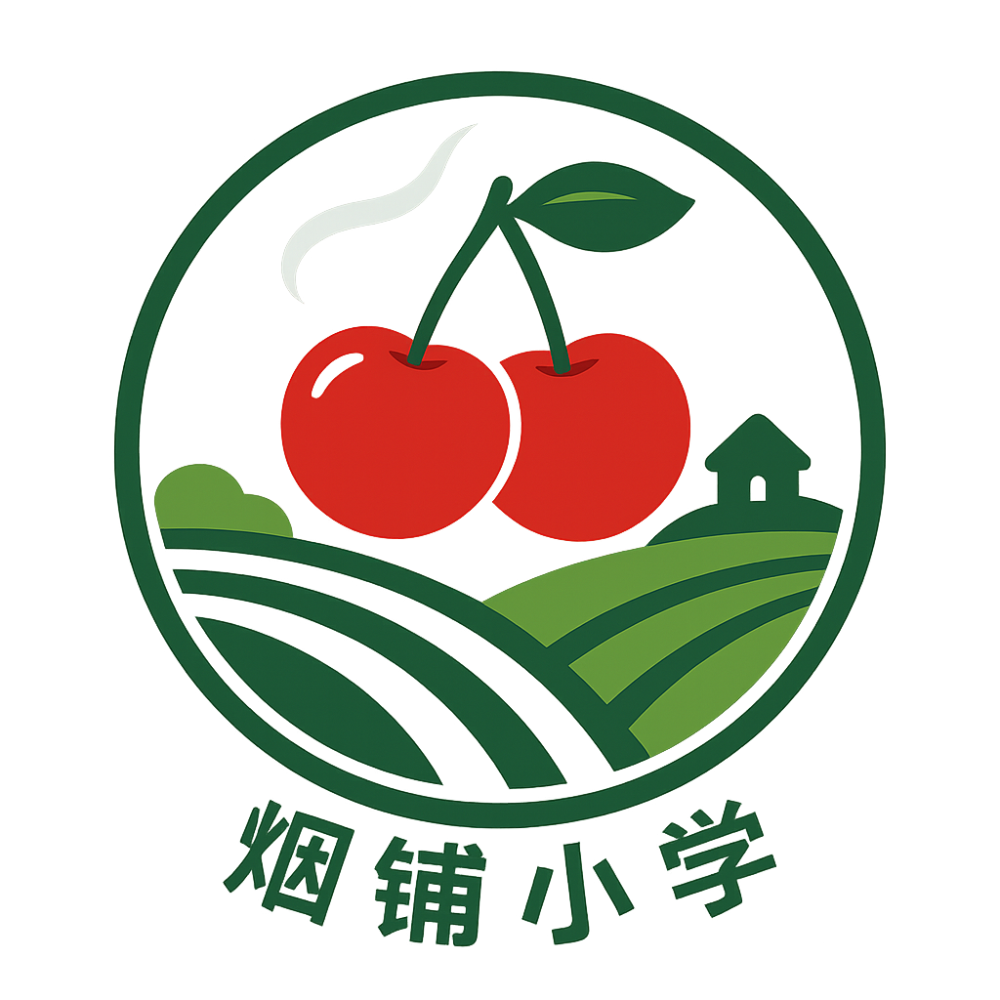

烟铺小学智慧环境监测物联网
{{ dateStr }} {{ now }}
室外温度
{{ formatInt(data.outdoor_temp) }}℃
PM2.5
{{ formatInt(data.pm25) }}μg/m³
天气
{{ data.weather }}
风向
{{ data.wind_dir }}
室内温度
{{ formatInt(data.temperature) }}℃
室内湿度
{{ formatInt(data.humidity) }}%
紫外线指数
{{ formatInt(data.uv_raw) }}
噪音
{{ formatInt(data.noise) }}dBA
MQTT状态:
{{ mqttStatus }}
Powered by 烟铺小学智慧环境监测物联网 © 2025 | Copilot前端优化版
视频监控
暂无视频信号
室内环境建议
{{ data.suggestionIndoor }}
室外环境建议
{{ data.suggestionOutdoor }}
AQI
{{ aqiLevelText }}
紫外线
{{ uvLevelText }}
eCO₂
{{ eco2LevelText }}
TVOC
{{ tvocLevelText }}
当前服务器地址: {{ currentServerUrl }}
留空则使用当前主机地址，端口固定为5051